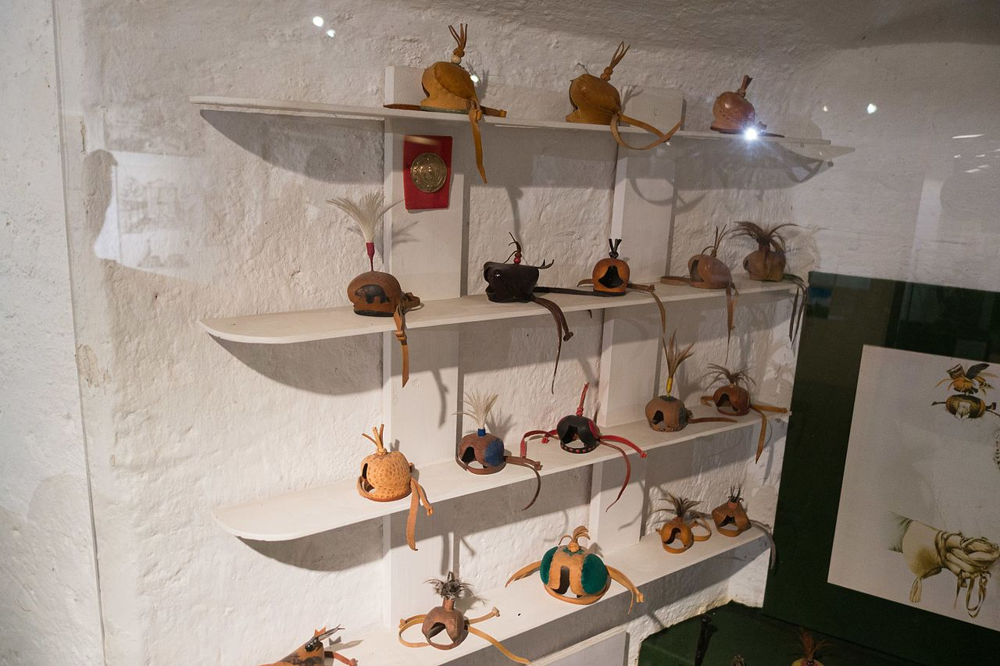

Resources → Gear & Equipment
Falconry Hoods
The falconry hood is one of the oldest and most elegant tools in the sport, used for centuries to calm raptors during transport, training, and hunting. A properly fitted hood blocks the bird's vision without restricting breathing, reducing stress and preventing the bird from bating at distractions.
Purpose of Hooding
Raptors are intensely visual predators. Their eyesight is many times sharper than a human's, and virtually every behavioral response they have, from hunting to fleeing to bating, is triggered by what they see. A hood works by temporarily removing visual stimulation, which immediately calms the bird and reduces stress hormones.
Hooding is not a form of punishment or restraint. When fitted correctly, a hood is comfortable and the bird accepts it willingly. Many experienced falconry birds actually become calmer and more relaxed when hooded, treating it as a signal that they can rest. Hawks and eagles in particular can be difficult to hood-train, but falcons typically accept hoods readily because the technique has been refined over thousands of years of falcon-specific falconry.
The primary situations where hooding is essential include transport to and from the field, waiting on the fist before a flight, exposure to environments with heavy human activity or vehicle traffic, veterinary examinations, and managing multiple birds in close proximity. Without hooding, a falcon on the fist at a busy hunting meet would bate continuously at every movement, exhausting itself and risking feather damage.
Hood Types and Styles
Dutch Hood
The Dutch hood is the most widely used style in modern Western falconry. It features a one-piece construction with a raised crest (the plume holder), a single seam running down the back, and braces (straps) that open and close the hood with a one-handed pull. Dutch hoods are typically made from two to three layers of leather: a stiff outer shell that holds its shape, a softer inner lining that contacts the bird's face, and sometimes a middle layer for structure.
The Dutch design excels in ease of use. The braces allow you to open the hood, place it on the bird, and close it with one hand while the bird sits on your other fist. This is critical because you rarely have a free second hand during hooding. Well-made Dutch hoods also have excellent ventilation through the beak opening and side panels.
Anglo-Indian Hood
The Anglo-Indian hood (also called the Indian hood or rufter hood) is a three-panel design with seams running along both sides and the top. It typically does not have braces; instead, it is held open by its natural spring and placed over the bird's head in a single motion. Some Anglo-Indian hoods use a drawstring closure at the back.
Anglo-Indian hoods are often preferred for initial hood training because they can be placed on the bird very quickly without the additional step of pulling braces. They are also popular for use with hawks and eagles that may not tolerate the brace-pulling motion well. The three-panel construction provides a rounder, more spacious interior that accommodates broader-headed species.
Arabian Hood
The Arabian hood (or Arab hood) is the oldest style, originating in the Middle East where falconry began. It features a simple, often undecorated design with a tight fit and minimal structure. Traditional Arabian hoods are made from a single piece of thin leather, molded wet over a wooden block and dried to shape. They tend to be lighter than Dutch or Anglo-Indian hoods.
Arabian hoods are less common in American falconry but are still used by some practitioners, particularly those who fly Saker falcons or who appreciate the historical tradition. They require precise fitting because the thin construction provides less margin for error in sizing.
Hood Sizing by Species
Hood sizing is critical. A hood that is too small will press against the bird's eyes and beak, causing discomfort and resistance to hooding. A hood that is too large will shift on the bird's head, allowing light to enter and defeating the purpose. Most hood makers use a numbering system where each size corresponds to a specific head circumference measured around the widest point of the skull.
| Species | Typical Hood Size | Head Circumference | Notes |
|---|---|---|---|
| American Kestrel | 1 – 1.5 | 2.5" – 2.75" | Rarely hooded; small size makes fitting difficult |
| Merlin | 1.5 – 2 | 2.75" – 3.25" | Female merlins may need size 2 |
| Cooper's Hawk | 2 – 3 | 3.25" – 3.75" | Females significantly larger than males |
| Peregrine Falcon (male/tiercel) | 3 – 3.5 | 3.75" – 4.25" | Standard Dutch hood works well |
| Peregrine Falcon (female) | 3.5 – 4 | 4.25" – 4.75" | May need wide-cut pattern for broad skull |
| Prairie Falcon | 3 – 3.5 | 3.75" – 4.25" | Similar to peregrine tiercel |
| Harris's Hawk | 3.5 – 4 | 4.25" – 4.75" | Broad head; Anglo-Indian style often preferred |
| Red-tailed Hawk | 4 – 5 | 4.75" – 5.5" | Not commonly hooded; large broad head |
| Gyrfalcon | 4 – 5 | 4.75" – 5.5" | Largest falcon; females may need size 5+ |
| Golden Eagle | 6 – 8 | 6" – 7.5" | Requires specialized eagle hood; Anglo-Indian preferred |
These sizes are guidelines. Individual birds within a species can vary significantly, and the only way to guarantee a perfect fit is to measure your specific bird's head circumference with a flexible tape measure. Many hood makers will custom-build a hood to your exact measurements for a modest upcharge.
Breaking In a New Hood
A new leather hood, particularly a Dutch hood, may be stiff and difficult to open and close smoothly. Breaking in a hood before using it on your bird is essential. Here is the standard process:
- Work the braces. Spend time opening and closing the braces repeatedly until the motion becomes smooth and effortless. You should be able to open and close the hood with one hand without looking at it.
- Soften the leather. Lightly dampen the interior of the hood with water (not soaking) and work the leather with your fingers to soften it. Some falconers breathe into the hood to use the warmth and moisture of their breath.
- Shape on a hood block. Place the hood on a hood block (a wooden or plastic form that approximates the bird's head shape) and let it dry. This sets the interior dimensions to the correct shape and prevents the hood from drying in a distorted form.
- Practice placement. Before putting the hood on your bird for the first time, practice the hooding motion dozens of times on the block. The movement should be smooth, confident, and quick: up from below, over the beak, and settled gently over the eyes in one fluid motion.
Never force a stiff, unbroken hood onto a bird. A bad first experience with hooding can make a bird hood-shy for life, and retraining a hood-shy falcon is one of the most frustrating challenges in falconry.
When to Use a Hood
Experienced falconers use hoods in the following situations:
- Transport: Any time the bird is being moved in a vehicle, carried through public spaces, or brought to unfamiliar environments. The hood prevents the bird from bating at passing cars, people, dogs, and other stimuli.
- Waiting in the field: When you arrive at a hunting location and need to scout terrain, set up equipment, or wait for conditions before releasing the bird, hooding keeps the falcon calm and conserves its energy.
- Multi-bird situations: At falconry meets or when training multiple birds, hoods prevent birds from fixating on each other, which can cause aggression, jealousy, or excessive screaming.
- Veterinary visits: Hooding dramatically reduces stress during physical examinations, coping (beak and talon trimming), and imping (feather repair).
- Weather events: During sudden storms, high winds, or other unexpected conditions in the field, hooding the bird prevents panic and allows you to safely return to your vehicle.
Note that hooding is primarily a falcon technique. Most hawk species (buteos and accipiters) are not traditionally hooded, although some falconers do hood-train Harris's hawks and goshawks with success. Red-tailed hawks are rarely hooded because their broad heads make fitting difficult and they generally tolerate visual stimulation better than falcons.
Hood Care and Storage
Hoods are precision instruments shaped from leather, and they require care to maintain their fit and function. Store hoods on a hood block or hood rack when not in use to prevent the leather from deforming. Keep them away from direct sunlight, which dries and cracks leather. If a hood gets wet, let it dry naturally on its block at room temperature. Periodically apply a small amount of leather conditioner to the exterior to maintain suppleness, but avoid getting conditioner on the interior where it contacts the bird's face.
Top Picks
Classic one-piece Dutch design with braces for one-handed operation. Available in multiple sizes for falcons and small hawks. Double-layered leather with comfortable interior lining.
Three-panel design ideal for broader-headed species like Harris's hawks. Quick placement without braces makes it excellent for hood training. Spacious interior with good ventilation.
Wooden hood blocks for shaping, storing, and breaking in hoods. Available in multiple sizes to match common falcon and hawk species. Essential for maintaining hood shape between uses.
Complete kit with pre-cut leather panels, braces, patterns, and instructions for building your own Dutch hood. A rewarding project that produces a custom-fitted hood for your bird.
Browse Hood Sellers
Find verified dealers offering falconry hoods, hood blocks, and hood-making supplies across the United States.
Browse SellersList Your Products
Make and sell falconry hoods? Reach serious falconers looking for quality craftsmanship.
Submit Your Listing